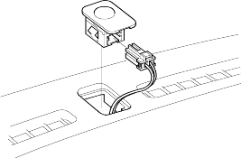
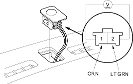

- Remove the sunlight sensor from the dashboard, then disconnect the 2P connector. Be careful not to damage the sensor and the dashboard.

- Install the sensor in the reverse order of removal.
- 3.6 - 3.7 V or more with the sensor out of direct sunlight.
- 3.6 - 3.5 V or less with the sensor in direct sunlight.
